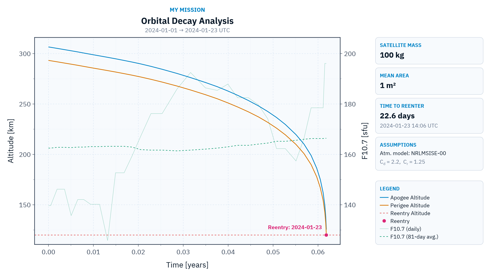

Decay Analysis
The decay analysis estimates how the orbit of a satellite evolves under perturbations until it reenters the atmosphere. This information is paramount for mission design since it provides the expected orbital lifetime, which is required, for example, by space debris mitigation regulations.
We can perform the decay analysis of a satellite using the function decay_analysis:
SatelliteAnalysis.decay_analysis — Function
decay_analysis(orb::KeplerianElements; kwargs...) -> DataFrame
decay_analysis(sv::OrbitStateVector; kwargs...) -> DataFrameCompute the orbital decay analysis of a satellite with initial mean elements orb represented in the TOD reference frame, propagating the mean orbital elements with averaged perturbations until the mean perigee altitude reaches terminate_altitude or the propagation time reaches tf.
By default, the input elements are treated as mean elements with respect to the averaged dynamics, following the same convention of semi-analytical tools such as STELA. Osculating elements, obtained, for example, from an instantaneous state vector, can be used by setting the keyword input_type to :osculating, in which case they are converted to mean elements before the propagation.
The initial state can also be specified by the orbit state vector sv represented in the TOD reference frame. Since a state vector is an instantaneous (osculating) state, the default value of the keyword input_type is :osculating in this case.
The model averages the following perturbations over one orbit: Earth gravity zonal harmonics (including a closed-form J₂² correction), third-body attraction of the Sun and the Moon, atmospheric drag, and solar radiation pressure gated by the Earth shadow.
This function only works after loading the package OrdinaryDiffEqAdamsBashforthMoulton.jl, which provides the default solver VCABM. Loading OrdinaryDiffEq.jl v6 also works because it depends on that package, but OrdinaryDiffEq.jl v7 or newer does not. In this case, the package OrdinaryDiffEqAdamsBashforthMoulton.jl must be loaded explicitly.
The default integrator configuration (solver, reltol, abstol, and num_sampling_points_per_orbit) is tuned for fast and accurate decay lifetime estimation: the lifetime and the altitude evolution change well below the atmospheric model uncertainty. However, the angular elements (RAAN, argument of perigee, and mean anomaly) accumulate a larger numerical error over long arcs. If accurate angles are required, use a tighter configuration, e.g. solver = Tsit5(), reltol = 1e-8, abstol = 1e-8, and num_sampling_points_per_orbit = 33.
Keywords
satellite_mass::Number: Satellite mass [kg]. This keyword is required.satellite_mean_area::Number: Mean cross-sectional area [m²] used for both the atmospheric drag and the solar radiation pressure. This keyword is required.atmospheric_model::Any: Callable object (a function or a callable structure) that returns the atmospheric density [kg/m³] at a given location and time considering a set of space indices. It must have the signature(jd_utc::Number, lat::Number, lon::Number, alt::Number, space_indices::NamedTuple) -> Numberwherejd_utcis the Julian date in UTC,lat,lon, andaltare the geodetic latitude [rad], longitude [rad], and altitude [m] of the point where the density is evaluated, andspace_indicesis the named tuple with the space indices at that instant provided by the keywordspace_indices. If it isnothing, the system uses an internal wrapper for the NRLMSISE-00 model provided by AtmosphericModels.jl, which requires the fieldsf107(daily 10.7 cm solar flux) [sfu],f107_avg(81-day average of the 10.7 cm solar flux) [sfu], andap(daily geomagnetic index) [-] in the named tuple. The macros@decay_analysis__jacchia77,@decay_analysis__jacchia77_stela, and@decay_analysis__jr1971provide keyword sets that select the Jacchia 1977 (report and STELA variants) and the Jacchia-Roberts 1971 models instead. (Default:nothing)atmospheric_model_name::Union{Nothing, String}: Name of the atmospheric model recorded in the metadataAtmospheric Modelof the outputDataFrameand shown, for example, byplot_decay_analysis. If it isnothing, the name is derived from the keywordatmospheric_model:"NRLMSISE-00"for the default model and"Custom (<name>)"for user-provided callables. (Default:nothing)gravity_model::Union{AbstractGravityModel, Nothing}: Gravity model used to compute the Earth gravitational perturbation. If it isnothing, the system fetches and loads the EGM96 model. (Default:nothing)input_type::Symbol: How the input elementsorbare interpreted. If it is:mean, they are treated as mean elements with respect to the averaged dynamics. If it is:osculating, they are treated as osculating elements and converted to mean elements before the propagation. Any other symbol raises anArgumentError. (Default::mean)num_sampling_points_per_orbit::Union{Nothing, Int}: Number of sampling points used to average the perturbations over one orbit. The perturbations are concentrated near the perigee in eccentric orbits, requiring more points. If it isnothing, the number is selected using the mean eccentricityeat the beginning of the analysis: 17 ife < 0.05, 33 ife < 0.3, or 65 otherwise. (Default:nothing)abstol::Number: Absolute tolerance of the numerical integration. (Default: 1e-6)C_d::Number: Drag coefficient [-]. (Default: 2.2)C_r::Number: Solar radiation pressure coefficient [-]. (Default: 1.25)distance_unit::Symbol: Unit of the altitude columns in the outputDataFrame. It can be:mfor meters or:kmfor kilometers. (Default::km)space_indices::Any: Space indices required by the atmospheric model. It can be a constantNamedTupleused for all instants or a callable object of time (in Julian days) that returns the named tuple with the space indices at that instant:(jd_utc::Number) -> NamedTuple. If it isnothing, the system provides the named tuple(f107 = ..., f107_avg = ..., ap = ...)required by the default atmospheric model using the data in SpaceIndices.jl: the observed daily F10.7 of the previous day (space indexF10obs), as prescribed by the NRLMSISE-00 documentation, the observed centered 81-day average F10.7 (space indexF10obs_avg_center81), and the observed daily geomagnetic index (space indexAp_daily). Outside the observed timespans, the F10.7 values fall back to the predicted observed F10.7 (space indexF10obs_predicted), which is a harmonic model fitted to the observed data that captures the mean solar cycle behavior, and the geomagnetic index falls back to Ap = 9, as in STELA. In this case, the required space index sets are initialized automatically, downloading the data files on first use. (Default:nothing)reltol::Number: Relative tolerance of the numerical integration. (Default: 1e-6)return_solution::Bool: Iftrue, the raw solution of the numerical integration (seeSciMLBase.ODESolution), whose state vector is the equinoctial orbital elements[a, ψ, e_x, e_y, i_x, i_y], is stored in the table-level metadataSolutionof the outputDataFrame. It can be obtained usingmetadata(df, "Solution"). (Default:false)solver: Solver from the OrdinaryDiffEq.jl ecosystem used for the numerical integration. Notice that the user must load the package that provides the selected solver (for example,Tsit5requires OrdinaryDiffEqTsit5.jl or OrdinaryDiffEq.jl). (Default:VCABM())terminate_altitude::Number: Mean perigee altitude [m] that terminates the analysis. (Default: 120e3)tf::Number: Maximum propagation time [s] after the orbit epoch. (Default:30 * 365.25 * 86400, or 30 years)time_unit::Symbol: Unit of the columntimein the outputDataFrame. It can be:sfor seconds,:minfor minutes,:hfor hours,:dfor days, or:yfor Julian years (365.25 days). (Default::y)verbose::Bool: Iftrue, a progress interface is shown instderrduring the numerical integration. In interactive terminals, a live panel shows a progress bar, the current mean perigee and apogee altitudes, the elapsed model time, and the elapsed wall time; at the end, the panel is left on the screen with the final state and a summary line is printed below it. Otherwise, plain progress lines are printed at every 5%, followed by the summary line. The progress fraction is the maximum between the time fraction and the perigee descent fraction, so it reaches 100% at either termination condition. Enabling the interface does not change the analysis result. (Default:false)
Returns
DataFrame: The mean orbital element evolution during the decay with the columns:date: Date and time of each point [UTC] encoded usingDateTime.time: Elapsed time of each point since the beginning of the analysis [time_unit].space_indices: Named tuple with the space indices used by the dynamics at each point. This column has no unit metadata since its fields have heterogeneous units. The default source provides the fieldsf107[sfu],f107_avg[sfu], andap[-].mean_elements: Mean Keplerian elements encoded usingKeplerianElements{MeanAnomaly}[SI], where the epoch is the point date [UTC]. Notice that the anomaly stored in the elements is the mean anomaly. The true anomaly can be obtained using the functiontrue_anomaly.apogee_altitude: Mean apogee altitude [distance_unit].perigee_altitude: Mean perigee altitude [distance_unit].
DataFrameusing metadata. TheDataFramealso stores the following table-level metadata, which is used, for example, by the functionplot_decay_analysis:Atmospheric Model: Name of the atmospheric model used by the drag computation.Description: Description of the table.Drag Coefficient: Drag coefficient [-].Satellite Mass: Satellite mass [kg].Satellite Mean Area: Mean cross-sectional area [m²].Space Indices Source: Description of the space indices source used by the dynamics.SRP Coefficient: Solar radiation pressure coefficient [-].Terminate Altitude: Mean perigee altitude that terminates the analysis [m].
return_solutionistrue, theDataFramealso stores the rawODESolutionin the metadataSolution, which is not propagated byDataFrametransformations.
Extended help
The satellite lifetime can be obtained from the last row of the returned DataFrame: if the perigee altitude reached terminate_altitude before tf, the last date is the decay epoch estimation.
Throws
ArgumentError: Ifinput_typeis not:meanor:osculating, ifdistance_unitis not:mor:km, or iftime_unitis not:s,:min,:h,:d, or:y.ArgumentError: Ifsatellite_mass,num_sampling_points_per_orbit,abstol,reltol, ortfis not positive, or ifsatellite_mean_area,C_d,C_r, orterminate_altitudeis negative.
Examples
julia> using SatelliteAnalysis, OrdinaryDiffEqAdamsBashforthMoulton
julia> jd₀ = date_to_jd(2024, 1, 1);
julia> orb = KeplerianElements(
jd₀,
EARTH_EQUATORIAL_RADIUS + 300e3,
0.001,
98.0 |> deg2rad,
ltdn_to_raan(10.5, jd₀),
90 |> deg2rad,
0
);
julia> df = decay_analysis(
orb;
satellite_mass = 100.0,
satellite_mean_area = 1.0,
space_indices = (f107 = 140.0, f107_avg = 140.0, ap = 9.0)
);
julia> df[end, :date] # ..................................... Estimation of the decay epoch
2024-01-27T10:47:28.289If the keyword space_indices is omitted, the analysis uses the observed and predicted indices provided by SpaceIndices.jl, requiring only the satellite properties:
julia> df = decay_analysis(orb; satellite_mass = 100.0, satellite_mean_area = 1.0);Examples
We will estimate the orbital lifetime of a 100 kg satellite with a mean cross-sectional area of 1 m² in a Sun-synchronous orbit with an altitude of 300 km. The first thing we need to do is define the orbit:
julia> jd₀ = date_to_jd(2024, 1, 1)2.4603105e6julia> orb = KeplerianElements( jd₀, EARTH_EQUATORIAL_RADIUS + 300e3, 0.001, 98.0 |> deg2rad, ltdn_to_raan(10.5, jd₀), 90 |> deg2rad, 0 )KeplerianElements{TrueAnomaly, Float64, Float64}: Epoch : 2.46031e6 (2024-01-01T00:00:00) Semi-Major Axis : 6678.137 km Eccentricity : 0.001 Inclination : 98.0° RA of Asc. Node : 77.68403925° Arg. of Periapsis : 90.0° True Anomaly : 0.0°
Now, we can use the function decay_analysis to obtain the orbit evolution until the reentry. Notice that we only need to provide the satellite mass and mean area: the space indices default to the observed and predicted values provided by SpaceIndices.jl, and the system fetches the EGM96 gravity model automatically:
julia> df = decay_analysis(orb; satellite_mass = 100.0, satellite_mean_area = 1.0)[ Info: Downloading the ICGEM file 'EGM96.gfc' from 'https://icgem.gfz-potsdam.de/getmodel/gfc/971b0a3b49a497910aad23cd85e066d4cd9af0aeafe7ce6301a696bed8570be3/EGM96.gfc'... [ Info: Downloading the file 'SW-All.csv' from 'https://celestrak.org/SpaceData/SW-All.csv'... [ Info: Downloading the file 'f107_observed_prediction_coefficients.csv' from 'https://raw.githubusercontent.com/JuliaSpace/SatelliteToolboxSpaceIndexSets/refs/heads/main/files/f107_observed_prediction_coefficients.csv'... [ Info: Downloading the file 'f107_adjusted_prediction_coefficients.csv' from 'https://raw.githubusercontent.com/JuliaSpace/SatelliteToolboxSpaceIndexSets/refs/heads/main/files/f107_adjusted_prediction_coefficients.csv'... 41×6 DataFrame Row │ date time space_indices ⋯ │ DateTime Float64 NamedTuple… ⋯ ─────┼────────────────────────────────────────────────────────────────────────── 1 │ 2024-01-01T00:00:00 0.0 (f107 = 139.7, f107_avg = 162.5,… ⋯ 2 │ 2024-01-01T00:46:43.114 8.88253e-5 (f107 = 139.7, f107_avg = 162.5,… 3 │ 2024-01-01T01:30:12.052 0.000171498 (f107 = 139.7, f107_avg = 162.5,… 4 │ 2024-01-01T02:40:13.796 0.000304643 (f107 = 139.7, f107_avg = 162.5,… 5 │ 2024-01-01T04:22:02.200 0.000498206 (f107 = 139.7, f107_avg = 162.5,… ⋯ 6 │ 2024-01-01T16:51:19.206 0.00192281 (f107 = 146.2, f107_avg = 162.8,… 7 │ 2024-01-02T07:17:50.499 0.00357031 (f107 = 146.2, f107_avg = 162.8,… 8 │ 2024-01-02T20:17:42.663 0.00505307 (f107 = 135.7, f107_avg = 162.7,… ⋮ │ ⋮ ⋮ ⋮ ⋱ 35 │ 2024-01-23T02:18:13.668 0.0604955 (f107 = 178.5, f107_avg = 166.3,… ⋯ 36 │ 2024-01-23T07:56:00.462 0.0611377 (f107 = 178.5, f107_avg = 166.3,… 37 │ 2024-01-23T11:12:20.343 0.061511 (f107 = 196.1, f107_avg = 166.4,… 38 │ 2024-01-23T13:02:58.716 0.0617214 (f107 = 196.1, f107_avg = 166.4,… 39 │ 2024-01-23T14:00:09.487 0.0618301 (f107 = 196.1, f107_avg = 166.4,… ⋯ 40 │ 2024-01-23T14:06:07.022 0.0618414 (f107 = 196.1, f107_avg = 166.4,… 41 │ 2024-01-23T14:06:07.022 0.0618414 (f107 = 196.1, f107_avg = 166.4,… 3 columns and 26 rows omitted
The estimated decay epoch is the date of the last point:
julia> df[end, :date]2024-01-23T14:06:07.022
We can also provide constant space indices, which is useful, for example, to analyze worst-case scenarios with high solar activity:
julia> df_high = decay_analysis( orb; satellite_mass = 100.0, satellite_mean_area = 1.0, space_indices = (f107 = 250.0, f107_avg = 250.0, ap = 9.0) )31×6 DataFrame Row │ date time space_indices ⋯ │ DateTime Float64 NamedTuple… ⋯ ─────┼────────────────────────────────────────────────────────────────────────── 1 │ 2024-01-01T00:00:00 0.0 (f107 = 250.0, f107_avg = 250.0,… ⋯ 2 │ 2024-01-01T00:28:20.256 5.38778e-5 (f107 = 250.0, f107_avg = 250.0,… 3 │ 2024-01-01T00:54:47.918 0.000104188 (f107 = 250.0, f107_avg = 250.0,… 4 │ 2024-01-01T01:36:57.980 0.000184361 (f107 = 250.0, f107_avg = 250.0,… 5 │ 2024-01-01T02:37:25.715 0.000299317 (f107 = 250.0, f107_avg = 250.0,… ⋯ 6 │ 2024-01-01T12:42:03.070 0.00144888 (f107 = 250.0, f107_avg = 250.0,… 7 │ 2024-01-01T21:46:12.689 0.00248348 (f107 = 250.0, f107_avg = 250.0,… 8 │ 2024-01-02T07:59:32.022 0.00364958 (f107 = 250.0, f107_avg = 250.0,… ⋮ │ ⋮ ⋮ ⋮ ⋱ 25 │ 2024-01-13T04:36:30.826 0.0333799 (f107 = 250.0, f107_avg = 250.0,… ⋯ 26 │ 2024-01-13T11:33:21.700 0.0341725 (f107 = 250.0, f107_avg = 250.0,… 27 │ 2024-01-13T15:31:13.866 0.0346247 (f107 = 250.0, f107_avg = 250.0,… 28 │ 2024-01-13T17:48:20.798 0.0348854 (f107 = 250.0, f107_avg = 250.0,… 29 │ 2024-01-13T19:01:56.404 0.0350254 (f107 = 250.0, f107_avg = 250.0,… ⋯ 30 │ 2024-01-13T19:23:19.195 0.035066 (f107 = 250.0, f107_avg = 250.0,… 31 │ 2024-01-13T19:23:19.195 0.035066 (f107 = 250.0, f107_avg = 250.0,… 3 columns and 16 rows omittedjulia> df_high[end, :date]2024-01-13T19:23:19.195
Using the Jacchia Models
The macros @decay_analysis__jacchia77, @decay_analysis__jacchia77_stela, and @decay_analysis__jr1971 provide keyword sets that select the Jacchia 1977 (report and STELA variants) and the Jacchia-Roberts 1971 atmospheric models provided by AtmosphericModels.jl instead of the default NRLMSISE-00. Each macro expands to the keywords atmospheric_model, atmospheric_model_name, and space_indices, hence it must be used in the keyword section of the call:
julia> df_j77 = decay_analysis( orb; satellite_mass = 100.0, satellite_mean_area = 1.0, @decay_analysis__jacchia77 )40×6 DataFrame Row │ date time space_indices ⋯ │ DateTime Float64 NamedTuple… ⋯ ─────┼────────────────────────────────────────────────────────────────────────── 1 │ 2024-01-01T00:00:00 0.0 (f107 = 141.4, f107_avg = 157.6,… ⋯ 2 │ 2024-01-01T00:52:29.324 9.97961e-5 (f107 = 141.4, f107_avg = 157.6,… 3 │ 2024-01-01T01:41:21.298 0.000192705 (f107 = 141.4, f107_avg = 157.6,… 4 │ 2024-01-01T03:00:14.376 0.000342687 (f107 = 141.4, f107_avg = 157.6,… 5 │ 2024-01-01T04:55:13.713 0.000561314 (f107 = 141.4, f107_avg = 157.6,… ⋯ 6 │ 2024-01-01T21:49:23.032 0.00248951 (f107 = 131.2, f107_avg = 157.9,… 7 │ 2024-01-02T10:21:22.740 0.00391927 (f107 = 137.4, f107_avg = 157.8,… 8 │ 2024-01-02T21:55:24.989 0.00523883 (f107 = 137.4, f107_avg = 157.8,… ⋮ │ ⋮ ⋮ ⋮ ⋱ 34 │ 2024-01-25T01:27:08.630 0.0658741 (f107 = 166.6, f107_avg = 161.5,… ⋯ 35 │ 2024-01-25T05:00:00.999 0.0662788 (f107 = 166.6, f107_avg = 161.5,… 36 │ 2024-01-25T07:31:52.137 0.0665676 (f107 = 166.6, f107_avg = 161.5,… 37 │ 2024-01-25T08:49:08.756 0.0667145 (f107 = 155.6, f107_avg = 161.5,… 38 │ 2024-01-25T09:30:49.994 0.0667937 (f107 = 155.6, f107_avg = 161.5,… ⋯ 39 │ 2024-01-25T09:45:12.612 0.0668211 (f107 = 155.6, f107_avg = 161.5,… 40 │ 2024-01-25T09:45:12.612 0.0668211 (f107 = 155.6, f107_avg = 161.5,… 3 columns and 25 rows omittedjulia> df_j77[end, :date]2024-01-25T09:45:12.612
The Jacchia models consume the space indices f107 (daily 10.7 cm solar flux) [sfu], f107_avg (81-day average of the 10.7 cm solar flux) [sfu], and kp (daily geomagnetic index Kp) [-]. The Jacchia models were derived using the F10.7 flux adjusted to 1 AU, unlike NRLMSISE-00, which uses the observed flux at the actual Earth-Sun distance. Hence, the default space indices source selected by the macros provides the adjusted F10.7 values and the observed Kp (space indices F10adj, F10adj_avg_center81, and Kp_daily), falling back to the predicted adjusted F10.7 (space index F10adj_predicted) and to Kp = 7 / 3 (equivalent to Ap = 9, as in STELA) outside the available timespans. Keywords passed after the macro override the ones it provides, so we can, for example, use the Jacchia 1977 model with constant space indices:
julia> df_j77_high = decay_analysis( orb; satellite_mass = 100.0, satellite_mean_area = 1.0, @decay_analysis__jacchia77, space_indices = (f107 = 250.0, f107_avg = 250.0, kp = 3.0) )25×6 DataFrame Row │ date time space_indices ⋯ │ DateTime Float64 NamedTuple… ⋯ ─────┼────────────────────────────────────────────────────────────────────────── 1 │ 2024-01-01T00:00:00 0.0 (f107 = 250.0, f107_avg = 250.0,… ⋯ 2 │ 2024-01-01T00:32:05.158 6.10046e-5 (f107 = 250.0, f107_avg = 250.0,… 3 │ 2024-01-01T01:02:00.319 0.00011789 (f107 = 250.0, f107_avg = 250.0,… 4 │ 2024-01-01T01:49:48.650 0.000208782 (f107 = 250.0, f107_avg = 250.0,… 5 │ 2024-01-01T02:58:36.654 0.00033959 (f107 = 250.0, f107_avg = 250.0,… ⋯ 6 │ 2024-01-01T13:53:37.972 0.00158497 (f107 = 250.0, f107_avg = 250.0,… 7 │ 2024-01-01T23:43:09.157 0.00270582 (f107 = 250.0, f107_avg = 250.0,… 8 │ 2024-01-02T10:40:37.186 0.00395585 (f107 = 250.0, f107_avg = 250.0,… ⋮ │ ⋮ ⋮ ⋮ ⋱ 19 │ 2024-01-15T06:44:42.506 0.0390994 (f107 = 250.0, f107_avg = 250.0,… ⋯ 20 │ 2024-01-15T14:14:21.108 0.0399543 (f107 = 250.0, f107_avg = 250.0,… 21 │ 2024-01-15T18:41:54.510 0.040463 (f107 = 250.0, f107_avg = 250.0,… 22 │ 2024-01-15T21:11:55.481 0.0407482 (f107 = 250.0, f107_avg = 250.0,… 23 │ 2024-01-15T22:28:40.971 0.0408941 (f107 = 250.0, f107_avg = 250.0,… ⋯ 24 │ 2024-01-15T22:56:59.286 0.040948 (f107 = 250.0, f107_avg = 250.0,… 25 │ 2024-01-15T22:56:59.286 0.040948 (f107 = 250.0, f107_avg = 250.0,… 3 columns and 10 rows omittedjulia> df_j77_high[end, :date]2024-01-15T22:56:59.286
The Jacchia 1977 model does not have a closed-form solution, so its equations are numerically integrated at every density evaluation, making the analysis considerably slower than with the default NRLMSISE-00 model. The Jacchia-Roberts 1971 model, selected by @decay_analysis__jr1971, is a closed-form analytic fit of the Jacchia model family with speed comparable to NRLMSISE-00:
julia> df_jr71 = decay_analysis( orb; satellite_mass = 100.0, satellite_mean_area = 1.0, @decay_analysis__jr1971 )42×6 DataFrame Row │ date time space_indices ⋯ │ DateTime Float64 NamedTuple… ⋯ ─────┼────────────────────────────────────────────────────────────────────────── 1 │ 2024-01-01T00:00:00 0.0 (f107 = 141.4, f107_avg = 157.6,… ⋯ 2 │ 2024-01-01T00:49:13.698 9.3597e-5 (f107 = 141.4, f107_avg = 157.6,… 3 │ 2024-01-01T01:35:02.962 0.000180716 (f107 = 141.4, f107_avg = 157.6,… 4 │ 2024-01-01T02:48:55.350 0.00032117 (f107 = 141.4, f107_avg = 157.6,… 5 │ 2024-01-01T04:36:27.215 0.000525617 (f107 = 141.4, f107_avg = 157.6,… ⋯ 6 │ 2024-01-01T22:31:45.865 0.00257009 (f107 = 131.2, f107_avg = 157.9,… 7 │ 2024-01-02T14:39:32.649 0.00441012 (f107 = 137.4, f107_avg = 157.8,… 8 │ 2024-01-03T06:27:31.073 0.00621248 (f107 = 137.4, f107_avg = 157.8,… ⋮ │ ⋮ ⋮ ⋮ ⋱ 36 │ 2024-01-24T21:45:17.061 0.0654523 (f107 = 166.6, f107_avg = 161.5,… ⋯ 37 │ 2024-01-25T01:40:12.592 0.0658989 (f107 = 166.6, f107_avg = 161.5,… 38 │ 2024-01-25T03:47:05.903 0.0661402 (f107 = 166.6, f107_avg = 161.5,… 39 │ 2024-01-25T05:12:41.660 0.0663029 (f107 = 166.6, f107_avg = 161.5,… 40 │ 2024-01-25T05:51:00.537 0.0663758 (f107 = 166.6, f107_avg = 161.5,… ⋯ 41 │ 2024-01-25T06:02:44.268 0.0663981 (f107 = 166.6, f107_avg = 161.5,… 42 │ 2024-01-25T06:02:44.268 0.0663981 (f107 = 166.6, f107_avg = 161.5,… 3 columns and 27 rows omittedjulia> df_jr71[end, :date]2024-01-25T06:02:44.268
The macro @decay_analysis__jacchia77_stela selects the STELA variant of the Jacchia 1977 model, which replicates the simplified assembly used by the CNES tools STELA and PATRIUS. This variant produces total densities a few percent higher on average than the report formulation, allowing the reproduction of decay analyses performed with those tools: the decay time of a 500 km sun-synchronous satellite computed by STELA is reproduced within about 1 %, whereas the report formulation yields a decay time about 7 % longer:
julia> df_j77_stela = decay_analysis( orb; satellite_mass = 100.0, satellite_mean_area = 1.0, @decay_analysis__jacchia77_stela )41×6 DataFrame Row │ date time space_indices ⋯ │ DateTime Float64 NamedTuple… ⋯ ─────┼────────────────────────────────────────────────────────────────────────── 1 │ 2024-01-01T00:00:00 0.0 (f107 = 141.4, f107_avg = 157.6,… ⋯ 2 │ 2024-01-01T00:50:00.472 9.50792e-5 (f107 = 141.4, f107_avg = 157.6,… 3 │ 2024-01-01T01:36:33.378 0.000183581 (f107 = 141.4, f107_avg = 157.6,… 4 │ 2024-01-01T02:51:37.500 0.000326308 (f107 = 141.4, f107_avg = 157.6,… 5 │ 2024-01-01T04:40:56.461 0.000534149 (f107 = 141.4, f107_avg = 157.6,… ⋯ 6 │ 2024-01-01T18:33:55.888 0.0021179 (f107 = 131.2, f107_avg = 157.9,… 7 │ 2024-01-02T07:03:37.372 0.00354328 (f107 = 131.2, f107_avg = 157.9,… 8 │ 2024-01-02T19:09:12.159 0.00492281 (f107 = 137.4, f107_avg = 157.8,… ⋮ │ ⋮ ⋮ ⋮ ⋱ 35 │ 2024-01-24T16:31:46.123 0.0648562 (f107 = 166.6, f107_avg = 161.5,… ⋯ 36 │ 2024-01-24T21:48:35.567 0.0654586 (f107 = 166.6, f107_avg = 161.5,… 37 │ 2024-01-25T01:32:03.556 0.0658834 (f107 = 166.6, f107_avg = 161.5,… 38 │ 2024-01-25T03:22:30.311 0.0660934 (f107 = 166.6, f107_avg = 161.5,… 39 │ 2024-01-25T04:25:51.956 0.0662139 (f107 = 166.6, f107_avg = 161.5,… ⋯ 40 │ 2024-01-25T04:56:16.891 0.0662717 (f107 = 166.6, f107_avg = 161.5,… 41 │ 2024-01-25T04:56:16.891 0.0662717 (f107 = 166.6, f107_avg = 161.5,… 3 columns and 26 rows omittedjulia> df_j77_stela[end, :date]2024-01-25T04:56:16.891
Each macro has a function version that returns the same keywords as a named tuple: decay_analysis__jacchia77_kwargs, decay_analysis__jacchia77_stela_kwargs, and decay_analysis__jr1971_kwargs. They allow selecting the atmospheric model programmatically, for example, when comparing the models in a loop:
for model_kwargs in (decay_analysis__jacchia77_kwargs, decay_analysis__jr1971_kwargs)
df = decay_analysis(
orb;
satellite_mass = 100.0,
satellite_mean_area = 1.0,
model_kwargs()...
)
println(df[end, :date])
endPlotting
If the user loads the package Makie.jl, an extension is loaded and adds the possibility to plot the decay analysis using the function plot_decay_analysis. The figure shows the evolution of the mean apogee and perigee altitudes, a dashed line marking the terminate altitude, and an annotation marking the reentry. The keyword show_dates adds the absolute dates [UTC] to the figure: the analysis timespan in the subtitle and the estimated reentry date in the information panel and in the reentry annotation. The information panel shows the satellite mass, the mean area, the time to reenter, and a card with the analysis assumptions (atmospheric model and drag and SRP coefficients), all resolved from the DataFrame metadata. The keyword show_f107 also plots the daily and the 81-day average 10.7 cm solar flux indices used by the dynamics using a twin y-axis. The values are extracted from the column space_indices using the keywords f107_getter and f107_avg_getter, whose defaults match the named tuple provided by the default space indices source; passing nothing to a getter omits the related curve:
using CairoMakie
fig, ax = plot_decay_analysis(
df;
mission_name = "My Mission",
show_dates = true,
show_f107 = true
)
fig
To export the figure in high resolution for reports, use:
save("decay_analysis.png", fig; px_per_unit = 2)